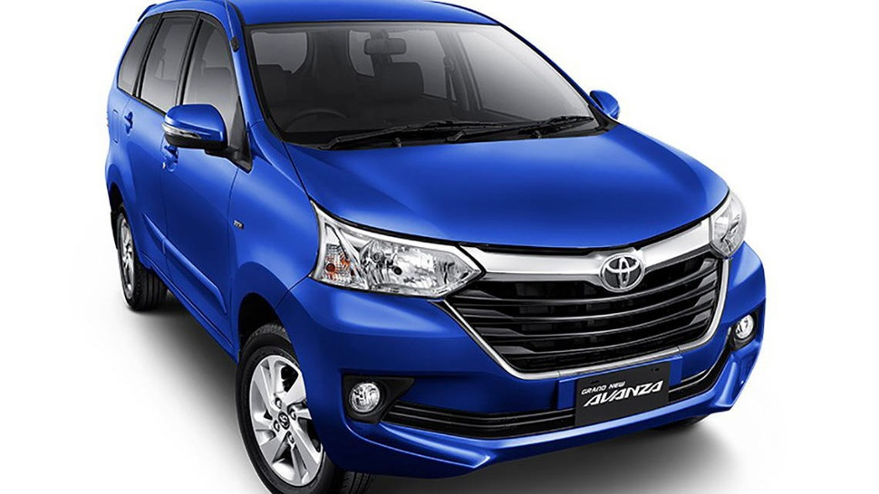
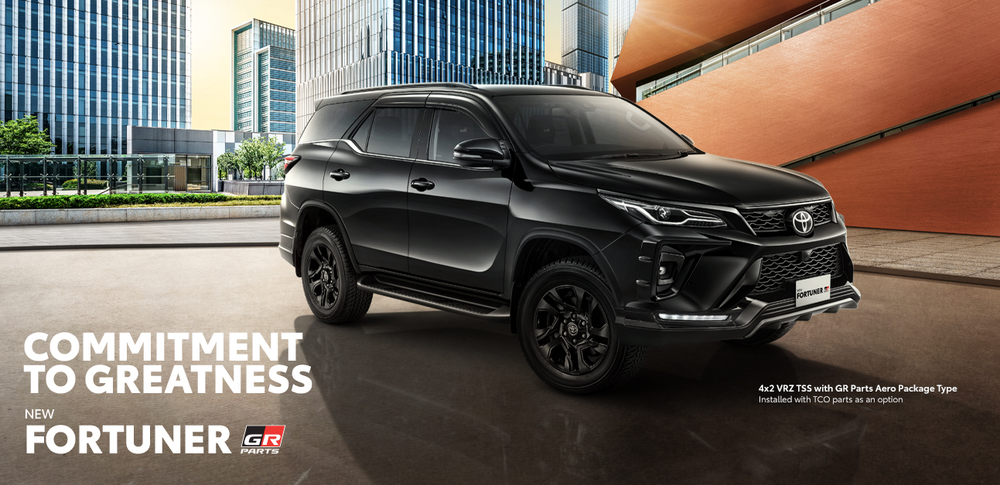
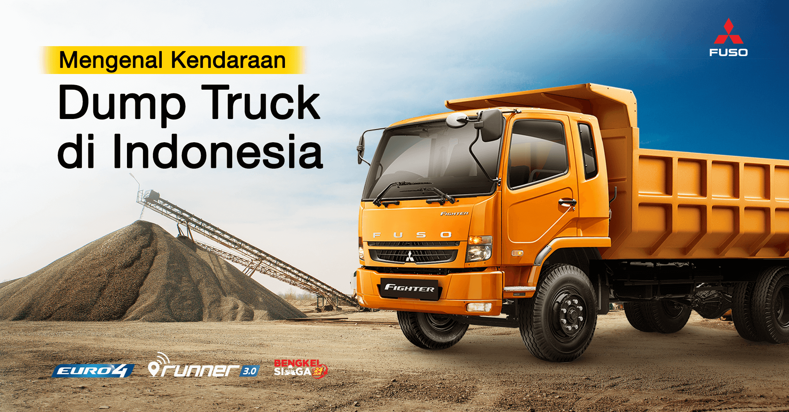
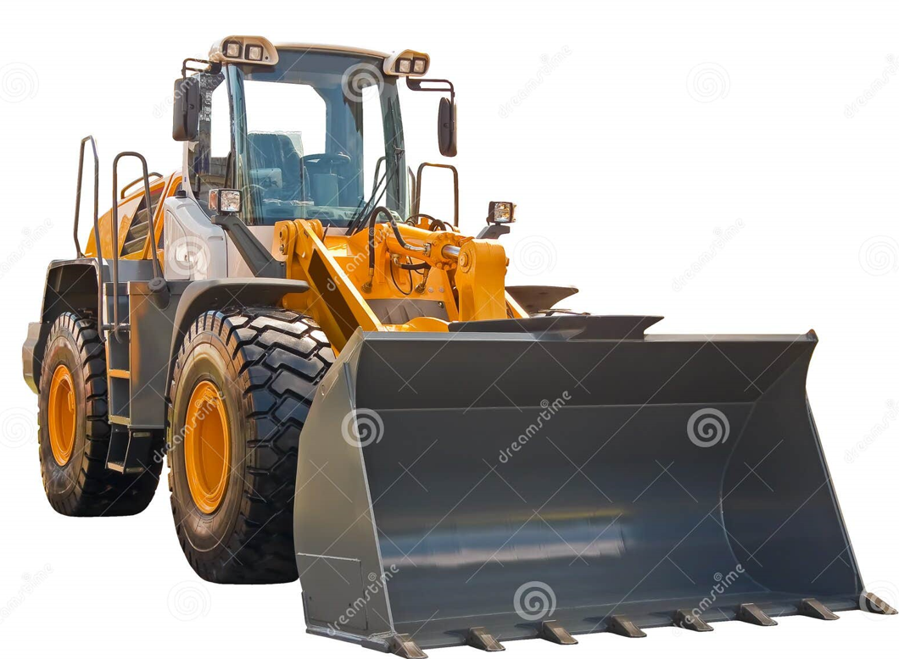

Mobil Keluarga

Berikut adalah beberapa informasi seputar mobil Toyota Avanza:
Dimensi: Toyota Avanza memiliki panjang 4.395 mm, lebar 1.730 mm, dan tinggi 1.700 mm.
Mesin: Avanza menggunakan dua pilihan mesin bensin berkapasitas 1.496 cc.
Transmisi: Avanza tersedia dengan transmisi manual dan CVT, tergantung variannya.
Kapasitas tangki: Kapasitas tangki BBM Toyota Avanza adalah 43 liter.
Ground clearance: Ground clearance Toyota Avanza adalah 195 mm.
Ukuran ban: Ukuran ban Toyota Avanza adalah 185/65 R15.
Ukuran pelek: Ukuran pelek alloy Toyota Avanza adalah 15 inci.
Kapasitas penumpang: Avanza dapat menampung hingga 7 penumpang.
Fitur: Avanza dilengkapi dengan fitur Pre-Collision Warning dan Braking yang berfungsi untuk memberikan peringatan kepada pengemudi jika terjadi bahaya atau potensi tabrakan.
Mobil Sport

Toyota Fortuner adalah mobil SUV 7-seater yang tangguh di segala medan. Berikut adalah beberapa informasi seputar Toyota Fortuner:
Sejarah
Toyota Fortuner mulai dipasarkan di Indonesia pada tahun 2005. Fortuner diesel yang menggunakan mesin 2KD-FTV 2.500 cc D4-D mendapatkan respons positif dari konsumen dan menjadi pilihan utama.
Varian
Fortuner memiliki beberapa varian, di antaranya G M/T, G A/T, G Lux A/T, dan V A/T. Varian V A/T merupakan varian paling atas dan mewah, serta satu-satunya model yang berpenggerak 4x4.
Mesin
Toyota Fortuner 2024 memiliki 3 pilihan mesin, yaitu bensin 2694 cc dan diesel 2393 cc.
Dimensi
Dimensi Toyota Fortuner adalah 4795 mm L x 1855 mm W x 1835 mm H.
Kapasitas tangki
Kapasitas tangki bahan bakar Toyota Fortuner 4x4 2.4 VRZ A/T DSL adalah 80 liter.
Pesaing
Pesaing terdekat Toyota Fortuner adalah Pajero Sport, Jimny, X Trail, dan CX-30.
Kekurangan
Toyota Fortuner dikritik karena desainnya yang ketinggalan zaman dan mengonsumsi lebih banyak bahan bakar daripada kendaraan lain di kelasnya.
Dump Truck

Tipper vessel cocok digunakan untuk mengangkut hasil tambang seperti batu bara dengan tingkat kepadatan 0,9 ton/meter kubik. Dump Vessel adalah tipe bak bongkar muat pada dump truck yang memiliki bodi kuat dan mampu menahan beban bawaan hingga puluhan ton..
Buldozer

Bulldozer adalah alat berat yang dilengkapi dengan pisau pendorong. Bagian tersebut dapat digunakan untuk berbagai fungsi seperti menarik beban, meratakan, menggali, dan menimbun tanah. Pada proyek yang memiliki tanah rawa menggunakan swamp dozer dan tanah yang sangat keras menggunakan ripper atau alat garpu.
Dump Tambang

Dump truck merupakan kendaraan yang digunakan untuk mengangkut material seperti kerikil, batu, pasir, tanah, hasil tambang dan material lainnya.